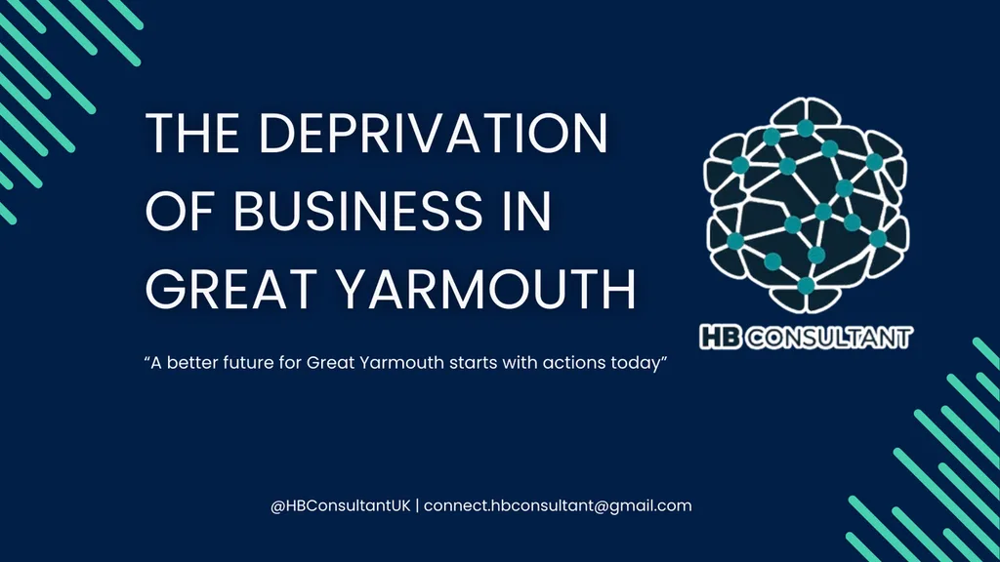

The Deprivation of Business in Great Yarmouth
The challenge
Great Yarmouth faces well-documented economic challenges. This project set out to examine the deprivation of business in the town — to look seriously at the condition of local business, and to give that examination the structure and rigour of a proper research report rather than a conversation.
My role
Author and analyst. The report was researched, written and produced independently under the HB Consultant name — the predecessor of Bradford Independent.
Approach
The report applies the same discipline that runs through all of my work: understand first, then analyse, and present the findings in a way that can actually be used. Business deprivation is a systems problem — the report treats it as one, examining the structures and conditions behind it rather than stopping at surface-level symptoms.
Work completed
- Researched and authored an independent report on business deprivation in Great Yarmouth.
- Designed and produced the report, including its visual identity.
Outcome
[CASE STUDY OUTCOME NEEDED] — no verified outcome information is published yet. Rather than inventing results, this section will be completed when outcome details can be stated accurately.
The report

Capabilities involved
Have a problem worth understanding properly?
Tell me what's happening, what you're trying to achieve, and where you're getting stuck.
Or go straight to the source
- harley@bradfordindependent.com
- I'll get back to you within a day.